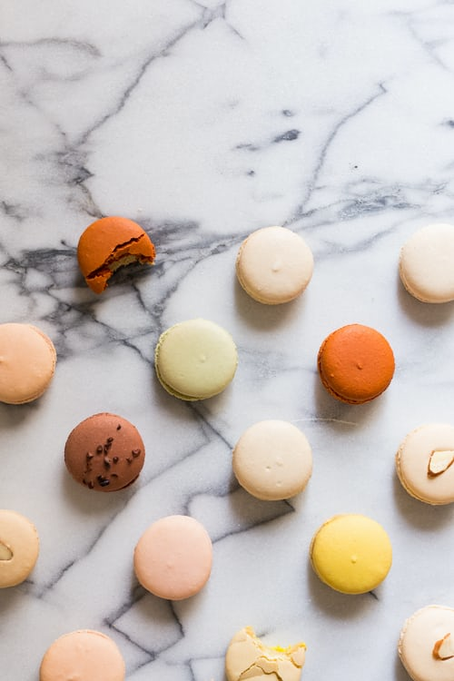

Fransa'da olduğunuzu hissettiren, en sevilen çeşidi çikolata dolgulu makaron başta olmak üzere çeşitli büyüklük ve renklerde restoranların tatlı menülerinde yerini almaya başlayan, beş çaylarını tamamlayan yeni tat makaronunu neden evde hazırlamalıyım?

Makaron
Hamuru için malzemeler
- 100 gr ince çekilmiş şeker
- 50 gr ince çekilmiş badem
- 2 yumurtanın akı
- 4 çorba kaşığı şeker
Çikolatalı krema için malzemeler
- 1 paket bitter çikolata
- 1 çay bardağı krema
- 30 gr tereyağı
Fıstıklı krema için malzemeler
- 40 gr tuzsuz antep fıstığı
- 1 su bardağı Şeker
- 100 gr tereyağı
- 1 paket vanilya
Portakallı krema için malzemeler
- 100 gr tereyağı
- 1 kahve fincanı portakal suyu
- 2 çay bardağı şeker
- 3 yumurta sarısı
- 2 yumurta
- 1 portakal
- 2 çorba kaşığı nişasta
Nasıl yapılır?
- Geniş bir kapta yumurta ve şekeri mikser yardımıyla köpürene kadar çırpın.
- İlk olarak ince çekilmiş şekeri ve file bademi mutfak robotuna alıp ince un kıvamına getirin
- Yumurta aklarını mikserin orta hızında köpük köpük oluncaya kadar beş dakika çırpın. Mikserin devrini artırıp 4 çorba kaşığı şekeri toplam iki dakikada azar azar ekleyin.
- Bademli karışımı elekten geçirin. Bademleri yumurta akıyla hazırladığınız karışıma ilave edin. Tahta bir kaşıkla çok fazla müdahale etmeden karıştırın.
- Kalan bademli karışımı ekleyip pürüzsüz ve tek bir renk hamur oluncaya kadar tekrar karıştırın.
- Hamuru sıkma torbasına aktarın. Yaklaşık 2 cm çapında dairesel hareketlerle yağlı kağıt serili fırın tepsisine aralıklı sıkın. Birinci tepsiyi 170 dereceye ayarlı fırında; fırının orta rafında 10 dakika pişirin.
- Fırından çıkarıp ikinci tepsideki makaronları da aynı şekilde pişirin. Pişen makaronları soğuması için bir kenarda bekletin.
- Soğuyan makaronları tepsiden çıkartıp orta kısımlarına istediğiniz sosu sürün. Ardından tost şeklinde kapatın.
Renkli makaron kreması nasıl yapılır?
- Çikolatalı krema için; Bıçakla ince ince kıyılmış bitter çikolata ve tereyağını benmari usulü eritin. Üzerine kremayı ekleyip karıştırın ve soğumaya bırakın.
- Fıstıklı krema için; Antep fıstığı ile ince çekilmiş şekeri mutfak robotunda un haline getirin. Üzerine vanilyayı ve tereyağını ilave edip tahta bir kaşıkla krem haline gelinceye kadar karıştırın. Karışımı buzdolabına alıp yarım saat kadar bekletin.
- Portakallı krema için; Portakalın kabuğunu rendeleyin. Tüm malzemeyi sos tenceresine alıp kısık ateşte muhallebi kıvamına gelinceye kadar pişirin. Ocaktan alıp soğumaya bırakın.
İŞTE PÜF NOKTALAR!!!
- Hamuru ve kremayı hazırlarken mutlaka ölçü kullanın.
- Kullanacağınız malzemeleri önceden öğütün. Kıvamını tutturmak için, kuru malzemeleri mikserden geçirin.
AFİYET OLSUN